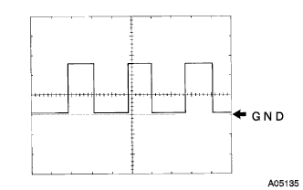

Meter & gauge system speed meter operation failure |

| Step 1 | TASCAN Data Read (Brake Auta Asset ASSY) |
Use the SST to perform the operation according to the screen display, display the [ECU Data Monitor] screen and check the computer data.
| Item name (symbol) | Items name explanation | Inspection condition | Screen display | Abnormal part |
|---|---|---|---|---|
| Vehicle speed (SPD1) | Express the meter speed 0-255km/h |
|
| Brake actuya ASSY |
|
| ||||
| OK | |
| Step 2 | Combination meter Assy inspection (SPEED SI terminal output voltage) |
Preparation before inspection
Confirm that the combination sijon meter asser assembly is connected.
Brake Activi Uta Cut the connector of ASSY.
Voltage inspection
Use SST (Toyota Electrical Tester) to check the voltage between the connector 24 (Speed Si) of the combination sijon meter asser Assemor Assemer ← → body earth.
| Tester connection | item | conditions | Reference value |
|---|---|---|---|
| 24 (Speed Si) ← → Body Earth | Voltage | IG Sweets ON | 10-14V |
|
| ||||
| OK | |
| Step 3 | Combination meter Assy inspection (input waveform) |
Preparation before inspection
Confirm that the combination sijon meter asser assembly is connected.
Connect the connector of the brake act youa as the ASSY.
Waveform inspection
  |
Using an oscilloscope, check the waveform between the connector 24 (Speed Si) of the combination sijon meter Assemor ASSY ← → body ground.
| item | Content |
|---|---|
| Measuring terminal | 24 (SPEED SI) ← → Body Earth |
| Instrument set | 5V/Div, 20ms/Div |
| Measurement conditions | Driving at about 20km/h |
|
| ||||
| NG | |
| Step 4 | Wire harness and connector inspection (combination sijon meter assy-brake actu sauce ASSY) |
Preparation before inspection
Confirm that the combination sijon meter asser assembly is connected.
Brake Activi Uta Cut the connector of ASSY.
Voltage inspection
 |
Use the SST (Toyota Electrical Tester) to check the voltage between the Wire Harness side connector SP1 terminal ← → body earth from the brake act Uta ASSY.
| Tester connection | item | conditions | standard |
|---|---|---|---|
| 26 (SP1) ← → Body Earth | Voltage | IG Sweets ON | 10-14V |
|
| ||||
| OK | ||
| ||